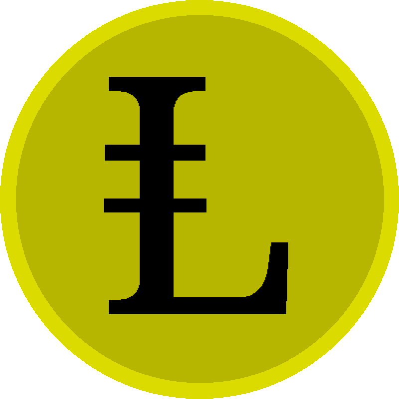

LibreMoney

1.1. Термины и определения
1.2. ФРС, Bitcoin, валюты, их недостатки и обеспеченность денег
1.3. Что такое деньги. Трудовая теория денег
2.1. Описание
2.2. Составляющие элементы LibreMoney
2.3. Предварительные правила проектов в системе LibreMoney
2.4. Группы и сообщества
2.5. Защита от создания пустых денег
2.6. Протокол
2.7. Программная реализация
2.8. API (RestAPI)
2.9. Структура управления сообществом разработчиков LibreMoney
3.1. История появления LibreMoney
3.2. Немного про Bitcoin, NXT и альткоины
3.3. История появления криптовалют
3.4. КриптоНотариус- блокчейн
3.5. Видео
3.6. Что дальше?